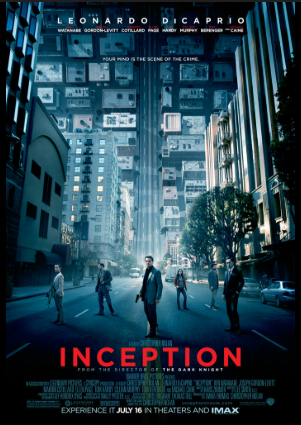

Inception is more than a sci-fi thriller; it is an exploration into the very foundation of human consciousness. This film forces you to rethink how you perceive ideas and, more importantly, how you process them. It illustrates how an idea—once planted—can be the most resilient parasite, or the most fragile spark. The narrative captures how an idea "fickles" the mind, dancing between reality and subconsciousness until the two become indistinguishable. It challenges the viewer to question the origin of their own convictions: are our thoughts truly our own, or are they products of the environments we inhabit?

Your Name is a breathtaking stor y about the persistence of human connection. It perfectly illustrates the "echoes" we leave in each other's lives, even when separated by impossible circumstances. The film moves beyond a simple romance, turning into a high-stakes race against time and fading memories. It leaves you reflecting on the people who have shaped your own life and the quiet, cosmic forces that bring us together. It isn’t just a movie you watch; it’s an experience that lingers long after the final frame.

While often seen as a simple romance, You’ve Got Mail is a sharp look at the clash between corporate efficiency and small-business hospitality. It explores the friction that occurs when the cold logistics of "big-box" business meet the emotional heart of an independent shop. The film's brilliance lies in its focus on connection. It shows how technology can strip away professional titles and rivalries, allowing two people to find common ground. It’s a nostalgic yet relevant reminder that behind every business decision is a human story.